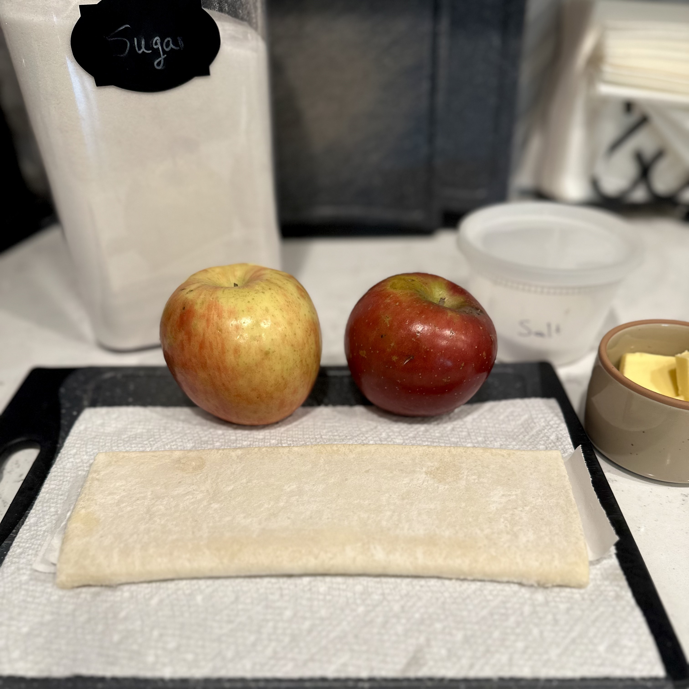
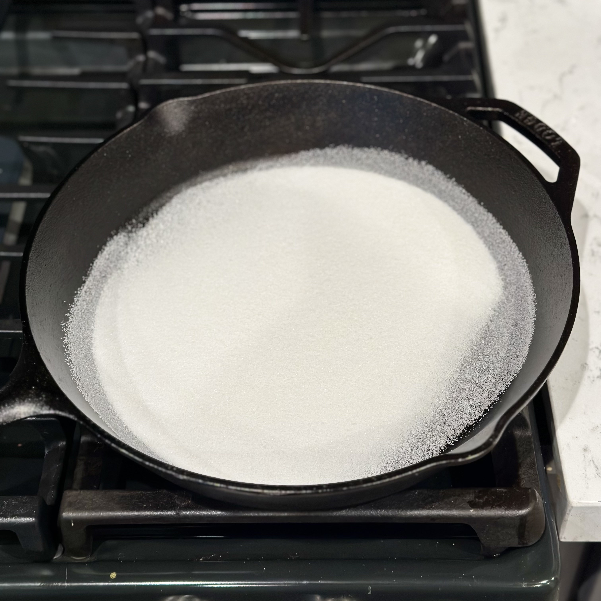
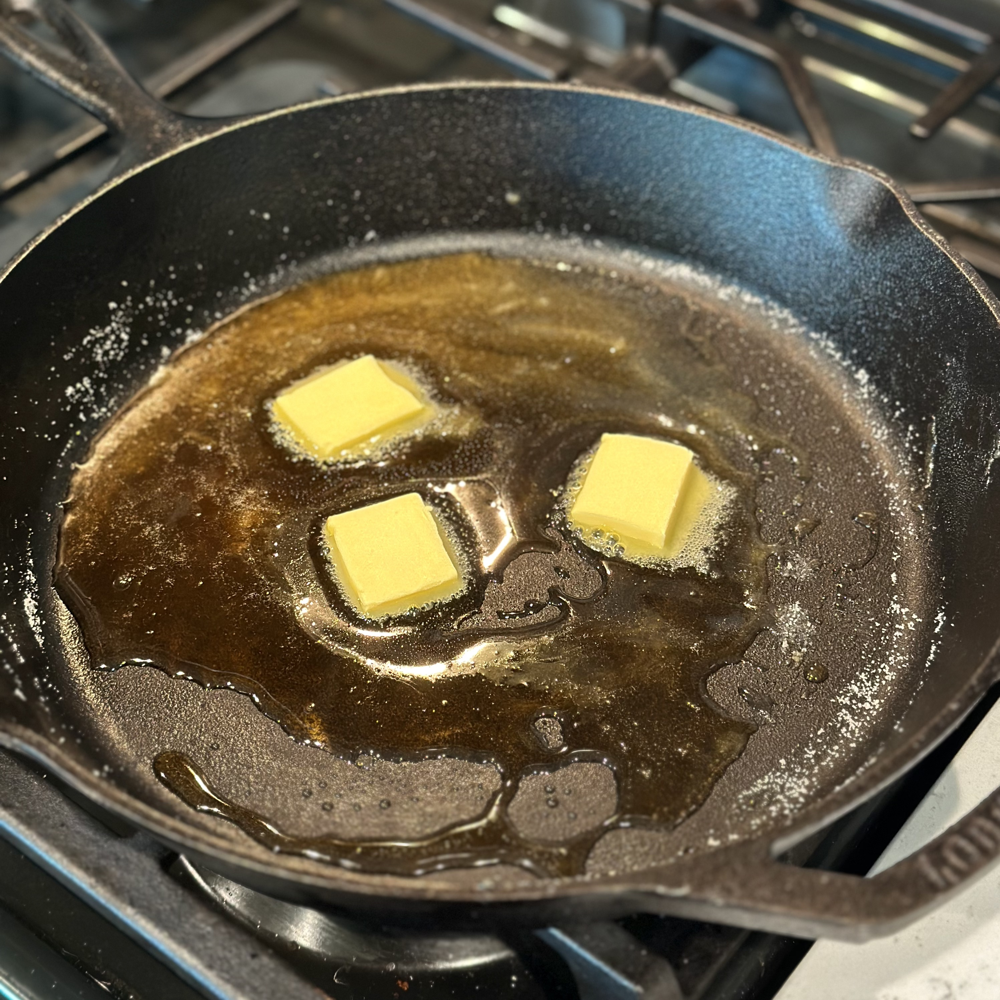
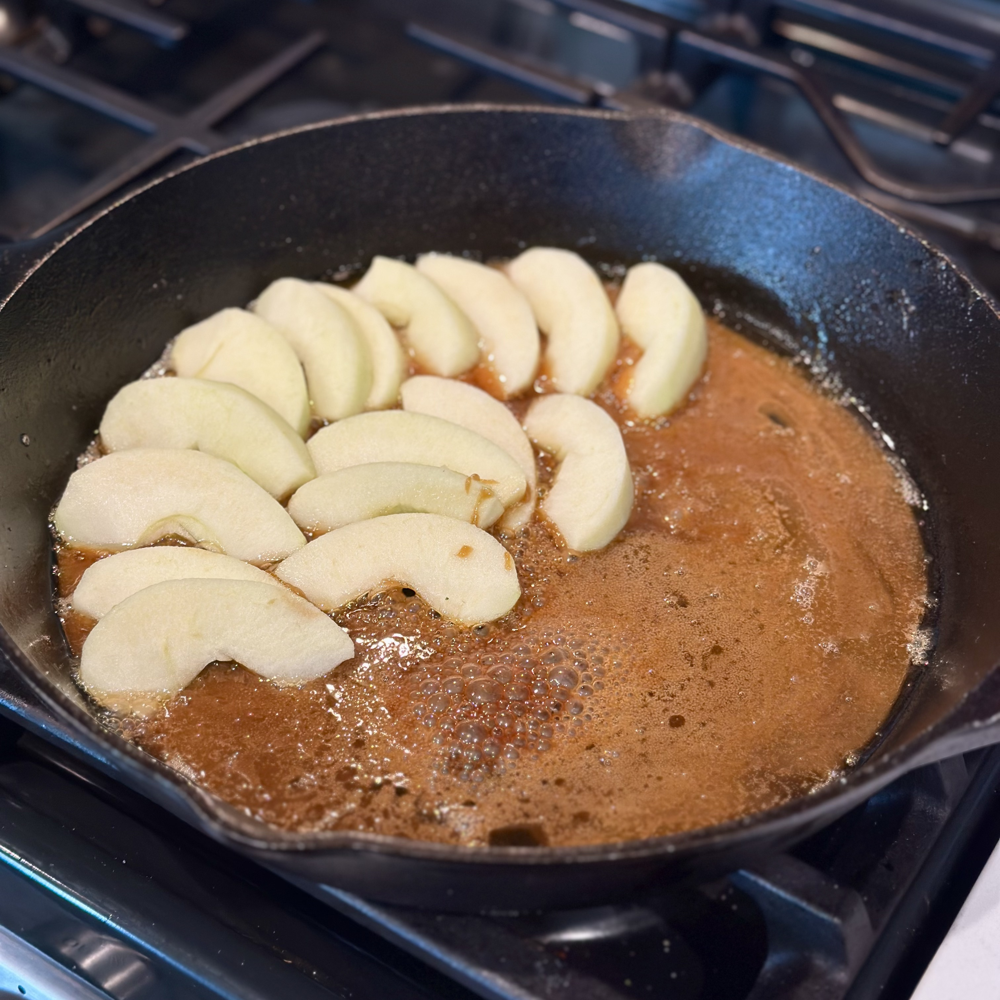
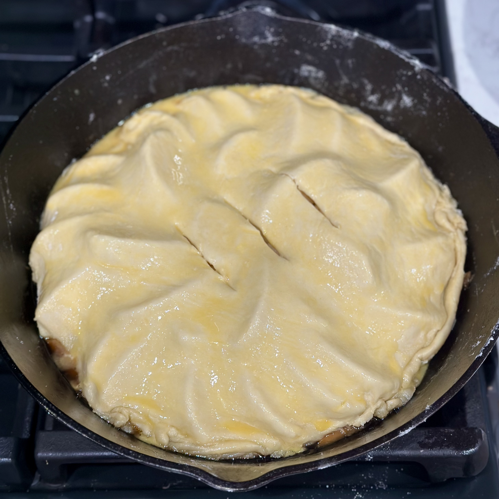
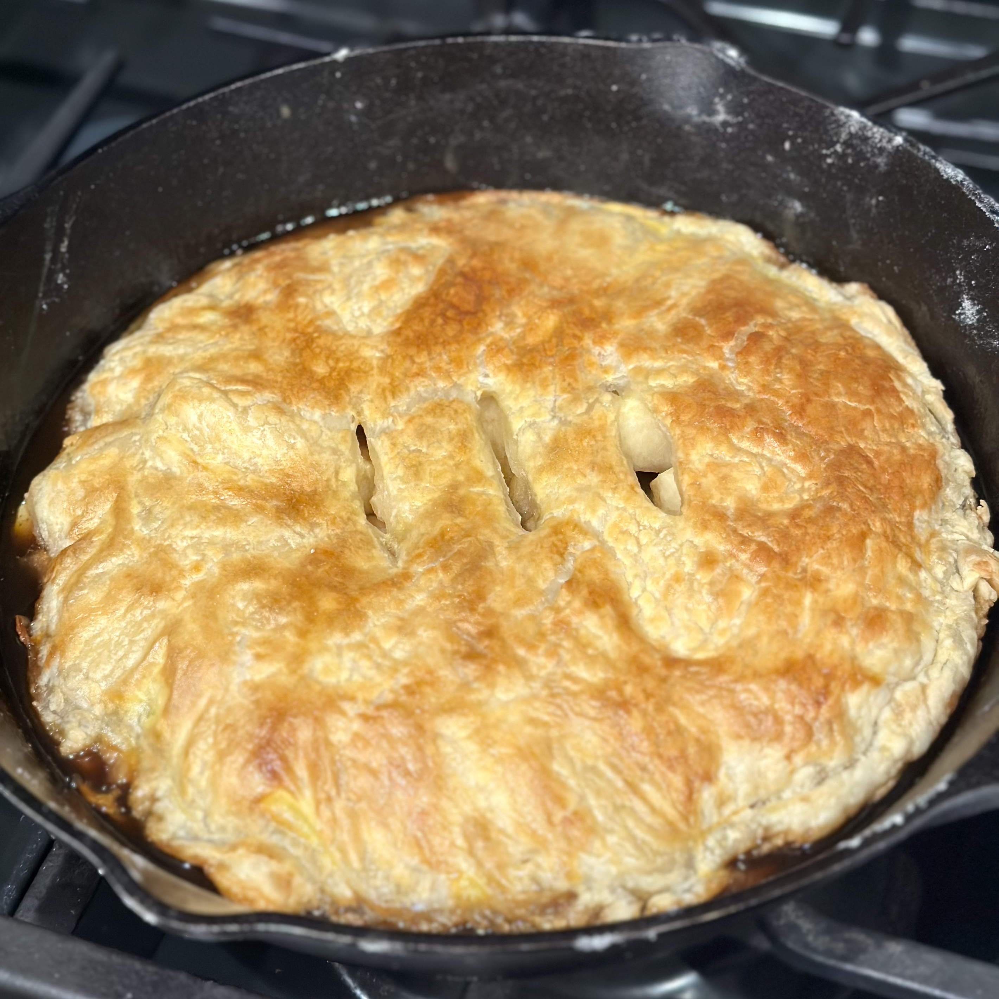

Overview
What is tarte Tatin?
Tarte Tatin is a French upside-down tart traditionally made with apples, sugar, butter, and pastry. Unlike a conventional fruit tart, the apples are placed in the bottom of the pan and caramelized in butter and sugar before being covered in pastry. The tart is baked with the pastry on top, then inverted before serving so that the caramelized fruit becomes the top of the finished tart.
Origin and History
Tarte Tatin is associated with sisters Stéphanie and Caroline Tatin, who ran a hotel in Lamotte-Beuvron in the Sologne region of France during the late nineteenth century. The sisters inherited their family's hotel in 1878 and their caramelized apple tart became a well-known local specialty. The dessert later gained wider recognition when French food writer Curnonsky included the "tarte des demoiselles" in La France gastronomique in 1926. By the late 1930s it had also appeared on the menu at the famous Parisian restaurant Maxim's, helping transform the regional specialty into an internationally recognized French dessert.
The Accidental Tart Legend
Tarte Tatin is famously said to have originated by accident. According to the most common version of the story, Stéphanie Tatin was preparing an apple tart when she allowed the apples to cook in butter and sugar for too long. Rather than discard them, she placed the pastry over the apples, finished the tart in the oven, and inverted it before serving. Other versions claim that she simply forgot to put the pastry beneath the apples. Although this story has become closely associated with the dessert, its accuracy is uncertain, and upside-down fruit tarts existed before the Tatin sisters.
Variations
Although apple remains the traditional choice, the basic tarte Tatin technique can be adapted to other ingredients. Pears, peaches, pineapple, and other fruits can be caramelized and baked beneath the pastry in much the same way. Modern versions can even be savory, using vegetables such as tomatoes or onions. Puff pastry and shortcrust pastry are both commonly used, resulting in somewhat different textures while preserving the characteristic upside-down preparation.
Recipe
Ingredients
- 100 g sugar
- 50 g butter
- Seasonings[1]
- 2 large apples, peeled and sliced[2]
- 1 sheet puff pastry
- 1 egg
Directions
- Evenly coat the bottom of an oven-safe pan with the sugar and heat on low until it melts and becomes golden in color.
- Add the butter and whisk until the mixture is homogeneous. Once the caramel is consistent, add the seasonings.
- Remove the caramel from heat and add in the apple slices on top, layering them tightly across the entire surface of the pan.
- Roll out the puff pastry until it is large enough to cover the entire pan. Lay the pastry over the top of the apples, trim the corners, and tuck into the sides of the pan.
- Coat the puff pastry with an egg wash and cut a slit in the top to let air escape while baking.
- Place the pan in a 400°F oven and bake until the puff pastry is golden brown.
- Flip upside-down onto a serving plate and enjoy as is or with a scoop of ice cream.
Notes
- To season the caramel, I like to use a pinch each of salt, cinnamon, and clove, but many other seasonings and spices would work as well, especially with different choices of fruit.
- My favorite varieties for this recipe are Granny Smith or Honeycrisp, but really any firm variety that will hold its shape when cooked will do just fine.






See Also
 Ice Cream
Ice Cream
 Chocolate Chip Cookies
Chocolate Chip Cookies
References
-
“Berceau de la tarte Tatin.” Mairie de Lamotte-Beuvron, lamotte-beuvron.fr/ma-ville/lamotte-beuvron-ville-imperiale/ville-imperiale/berceau-de-la-tarte-tatin/. Accessed 29 Aug. 2026.
Used for information about the Tatin sisters, their hotel in Lamotte-Beuvron, and the history of the tart associated with them. This page also discusses the local history of tarte Tatin and its development into a well-known regional specialty. -
Curnonsky, and Marcel Rouff. La France gastronomique: Guide des merveilles culinaires et des bonnes auberges françaises. L'Orléanais. F. Rouff, 1926.
Used as a historical source for the early recognition and popularization of tarte Tatin outside of Lamotte-Beuvron. The book includes the Tatin sisters' apple or pear tart among the regional specialties of the Orléanais and provides information about the region's food and restaurants. -
Davidson, Alan. The Oxford Companion to Food. 3rd ed., edited by Tom Jaine, Oxford UP, 2014.
Used for general information about tarte Tatin, its preparation, and variations made with different fruits. This reference also provides historical and culinary information about a wide range of other foods, dishes, ingredients, and cooking techniques. -
Leclercq, Pierre. “Les grands mythes de la gastronomie : La tarte des demoiselles Tatin.” Université de Liège, 15 Apr. 2018, news.uliege.be/cms/c_9917930/fr/les-grands-mythes-de-la-gastronomie-la-tarte-des-demoiselles-tatin. Accessed 29 Aug. 2026.
Used for information about the history of tarte Tatin and the legends surrounding its supposed accidental invention. The article also traces earlier upside-down tarts and historical recipes, helping distinguish the documented history of the dish from later origin stories.